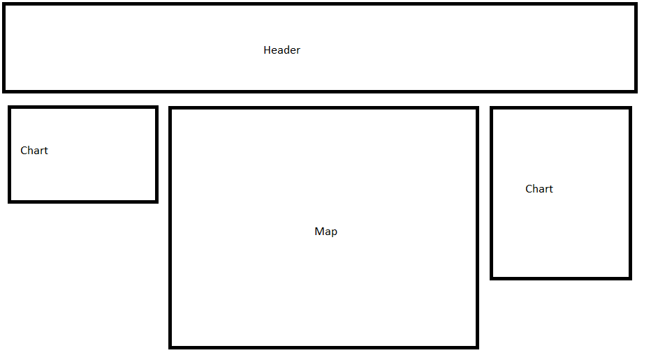
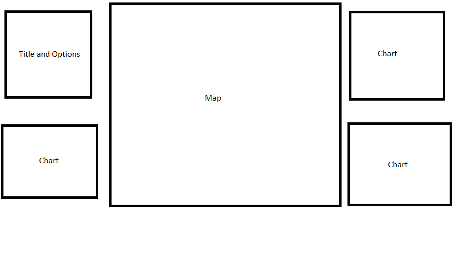
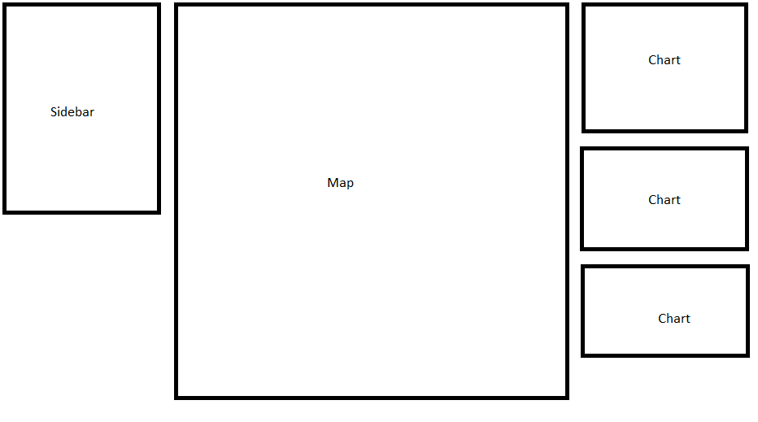

The data:
The data for this interactive visualization is based on Dr. John Snow's map of London's 1854 cholera epidemic, and was provided by Dr. Khairi Reda at this link. It is important to note that the sex and the age of the victims are random and not historically accurate to the map at hand. These are instead based on a different cholera outbreak (in Naples, 1884).
The design process:
Designing the visualization was an iterative and multifaceted approach In the beginning, I had debated between where to put the different charts, as described in the rough sketches shown on this page. I had considered using a header instead of a side bar, and I worked hard to ensure that the visualization and full page was able to appear in one screen (specifically on a 1520px by 563px canvas--my own laptop). If I were designing this to be presented mainly on a mobile device, I would have to reconsider my options and what I would want to accomplish.
Rationale of design choices:
When considering the overall design of my visualization, I was focused entirely
on quick but efficient chart readability. I was careful not to make the font sizes of options
and more information too small (in general, the minimum font size used on the site is 12,
although exceptions were made when labeling the map streets and buildings.
On the topic of color, I utilized not only Color Brewer 2 but also
Color Oracle in order to ensure that my final visualization
is hospitable to those with a color-blindness impairment. This led me to choose purple and coral
to represent male and female, instead of the traditional blue and pink. I am glad that this is
the case, as picking two neutral colors like these reduces the reliance on the traditional gender-
coded colors.
I decided to present the charts in their current locations because I felt that it was important to
give the greatest attention to the map and place it in the center of the screen. I decided to employ
a side bar, rather than a header, in order to place the color-coded key as visually-close to the map
as possible. I knew that the charts would be color coded as well, so I wanted the key to be symmetrical
(i.e. color key to the left and right of the map, not top and sides).
Reflection:
The visualization, much like John Snow's, makes it clear that the massive number of infections seem to be emanating from the Broad Street Pump. My visualization also makes it clear that cholera does not discriminate against sexes (something that seems obvious in modern times but would be useful information back then), and that the primary deaths are the very young and the very old. This lends itself to the epidemiology of the individuals: the young and old have weakened immune systems.
Brainstorming Sketches:

